3Days ワークショップフロー: AI とつくる「自分の SaaS の MVP」
ワークショップの目的・ゴール
前提知識（この3日間で前提とすること）
- Claude Code を使ったことがある（起動・依頼・承認/拒否の基本操作が分かる）
- Git を用いた開発経験がある（ブランチ・commit・push が一通りできる）
- ソフトウェア開発の基本知識（基本情報技術者試験程度）
目的
- Claude（Design / Code）を使った開発フローを3日間で一周する
- 「AI にどう頼むと良いものが出てくるか」の肌感をつかむ
- デザイン → フロント → バック → テスト → デプロイ → 機能拡張 という実務に近い開発サイクルを、AI を駆動しながら一通り体験する
題材: 各自が作りたい SaaS の MVP（事前に考えてきてもらう）
- 題材は各自が作りたい SaaS を持ち寄る。「流れを体験するのが目的」なので題材は自由
- ただし3日間で一周できるよう、下記の必須機能に相当するものを備えた MVP に落とし込んでおく（事前周知で「どんな SaaS を作るか・必須機能をどう満たすか」を軽く考えてきてもらう）
- 資料中の例「玄米茶」は説明用の共通サンプル: ライセンスキー販売型のサブスク SaaS
- ページ構成: LP（
/）・問い合わせ（/contact）・マイページ（/mypage）・購入完了（/success） - 自分の題材では、このページ構成・機能を自分のサービスに読み替える
- ページ構成: LP（
- 注意喚起: 3日間で一周するため、Day 2 までは構成を盛りすぎない（拡張は Day 3 のオプションで）
必須機能（作るものの最低ライン・Day 2 までに）
| # | 機能 | 中身 | 対応ページ |
|---|---|---|---|
| 1 | LP | サービス紹介のランディングページ | / |
| 2 | 価格表示 | 料金プラン（月額／年額など）を見せる | /（または専用） |
| 3 | お問い合わせフォーム | 入力 → 送信 → 受付（POST /api/contact） | /contact |
| 4 | マイページ | ログインユーザーの情報・ライセンス表示 | /mypage |
| 5 | ライセンスキーの配布 | 購入者にキーを発行・表示する。Day 2 では自分たちで発行する簡易版（手動 or 固定ロジック）でOK | /success 等 |
- 5 の「Stripe 購入 → Webhook で自動発行」は Day 3 オプション [8] に回す。Day 2 の core では自前でキーを作って配るところまで（＝決済なしで配布の形だけ通す）。
- 認証（4 のログイン）も Day 2 はモック認証（ログイン済みとして固定値を返す簡易実装）でよい（本物の Clerk は Day 3 [9]）。
ゴール（完了条件）
必達（Day 1〜2 全員）
- [1] デザイン（Day 1）: 使いたい機能すべてにたどり着ける画面・導線が揃い、デザインを zip で書き出せる
- [2] フロント（Day 1）:
localhost:5173で表示崩れなし／React Router で4ページ遷移できる - [3] フロントデプロイ（Day 1）:
https://<name>.workers.devで LP が表示され、URL を他の参加者と共有できる - [4] バック（Day 2）: フロントと API がつながりローカルで一通りの機能が動く。
/api/meは未認証で弾かれ、/api/contactは不正入力で弾かれる - [5] 自動テスト（Day 2）:
npm testがグリーン。正常系・異常系・未認証テスト各1本以上 - [6] デプロイ（Day 2）: 自分の
https://<name>.workers.devで LP が表示され/mypageも 404 にならない
任意（Day 3）: オプション課題 [7]〜[11] から興味のあるものを選ぶ。最低限動くものを完了とする。
必達は [1]〜[6]（Day 1〜2 全員）。各日2時間と短いので、全員でここをやり切ることに集中する。Day 3 のオプション課題 [7]〜[11] は必須ではない——やらない／1つだけ、も可。
全体タスクマップ
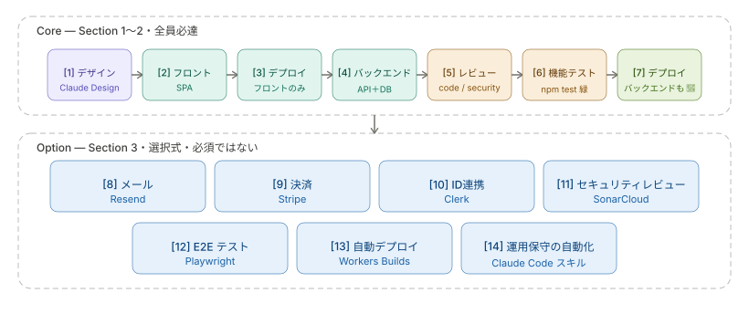
図は流れの全体像。各タスクの成果物・完了条件・落とし穴は下のカードを参照。Day 3 の [7]〜[11] も同様の形式で後続セクションに詳細ガイドが続く。
Core（Day 1〜2・全員必達）
[1] デザインの方向性を決める（Claude Design）
Claude Design — Anthropic が提供する画面デザイン生成ツール。プロンプトで画面イメージを生成し、ZIP でエクスポートして Claude Code に渡せる。
- 成果物: 全画面分の方向性が決まったデザイン（Claude Design の Project）。zip でエクスポートして次タスクに渡せる
- 完了条件: 使いたい機能すべてにたどり着ける画面・導線が揃い、zip で書き出せる
- 落とし穴: ピクセル完璧を狙わない。指定するのは「中身（機能・売り）」だけ
[2] フロント（LP・価格表示・各ページ）
- 成果物:
/(LP＋価格)/contact/mypage/successが SPA で動く（Vite + React + TS + Tailwind v4） - 完了条件:
localhost:5173で表示崩れなし／React Router で4ページ遷移できる
[3] フロントデプロイ（Cloudflare Workers）
- 成果物:
https://<name>.workers.devでフロントが公開された状態 - 完了条件: 本番 URL で LP が表示でき、URL を他の参加者と共有できる
[4] バック（API＋ライセンス発行）
- 成果物:
POST /api/contact／GET /api/me（モック認証）／POST /api/verify-license／購入者へキーを自前発行 - 完了条件: トップページ・
/mypage・API がローカルで動き、フロントと連動すること - 落とし穴: ① D1/KV を先に作って id を
wrangler.tomlに貼る ②[assets]に SPA フォールバック設定 ③ 秘密は.dev.vars（セキュリティ対策参照）
[5] 自動テスト
- 成果物:
npm testがグリーン - 完了条件: 純粋関数テスト・正常系・異常系・未認証テスト 各1本以上
- 落とし穴:
@cloudflare/vitest-pool-workersのdefineWorkersConfig（素の vitest 設定では動かない）／外部 fetch は全部モック
[6] デプロイ（公開）
- 成果物:
https://<name>.workers.devで公開 - 完了条件: 本番 URL で LP 表示／
/mypageが 404 にならない - 落とし穴: リモート D1 マイグレーション忘れ（deploy 前に
npm run db:migrate:remoteを必ず実行）／ビルド失敗で deploy が止まる／バックのwrangler.tomlのnameを [3] フロントデプロイ時と同じ値にする（違うと URL が変わり、フロントとバックが別 Worker になってしまう）
Option（Day 3・選択式・必須ではない）
| # | タスク | 難易度 | 成果物 / 完了条件 |
|---|---|---|---|
| [7] | メール（Resend） | ★★☆ | 問い合わせ受付メール・ライセンス送付メールを自分宛に送れる |
| [8] | 決済（Stripe） | ★★★ | Stripe Checkout → Webhook でライセンスキー自動発行。テスト用カードでマイページにキーが表示されること |
| [9] | ID 連携（Clerk） | ★★☆ | 未ログインで /mypage に入れない・/api/me がログイン必須になっている |
| [10] | 運用保守（Cloudflare ログ確認・スキル化） | ★★☆ | wrangler tail でログ確認できる・KV レート制限がテストで証明できる |
| [11] | セキュリティ（SonarCloud 静的解析・脆弱性レビュー） | ★★★ | 認証境界・IDOR・機密マスクを点検し、問題を最低1つ修正して回帰テストを追加 |
📊 ツール・サービス連携の詳細フロー — ユーザー体験視点での Day 2 Core + Day 3 オプション機能の統合シーケンス図（LP アクセス → ログイン → 問い合わせ → 購入 → メール受信 → マイページで確認）は、tools-sequence.html をご覧ください。Day 2 と Day 3 の分岐が色分けで表現されています。
全体マップ
| Day | テーマ | 内容 |
|---|---|---|
| Day 1 | つくる（前半） | 目的・技術紹介 / 環境確認 / [1] デザイン / [2] フロント / フロントデプロイ |
| Day 2 | つなぐ・公開する | [4] バック / [5] 自動テスト / [6] デプロイ（Cloudflare Workers）再デプロイ |
| Day 3 | 育てる | オプション課題 [7]〜[11] / ラップアップ・発表会 |
- 各日2時間 × 3日（計6時間）の短期集中型。AI に大胆に任せてテンポよく進める
- Day 1〜2 が全員共通の本編（必達）。Day 1 でフロント完成後にデプロイ、Day 2 でバックを繋いで再デプロイが目標
- Day 3 のオプション課題は必須ではない。興味・進捗に応じて選ぶ
タイムテーブル目安（各日 2 時間 × 3 日 ＝ 計 6 時間）
Day 1: つくる（前半）— 環境確認 + デザイン + フロント + デプロイ
| 経過 | 内容 |
|---|---|
| 0:00–0:10 | オープニング: 目的・ゴール・技術紹介・全体像 |
| 0:10–0:20 | 環境確認（node / git / claude / wrangler 確認。手短に） |
| 0:20–0:50 | [1] Claude Design（LP を中心に3案 → 1つ選ぶ → 他ページを追加生成） |
| 0:50–1:35 | [2] フロント作成（デザイン zip を渡して全画面・モックで動かす） |
| 1:35–1:50 | [3] フロントを Cloudflare Workers にデプロイ（URL を共有） 🎉 |
| 1:50–2:00 | クロージング: dev ブランチに git push できているか確認 |
Day 2: つなぐ・公開する — バック＋テスト＋デプロイ（ここがマスト）
| 経過 | 内容 |
|---|---|
| 0:00–0:10 | 前回振り返り・キャッチアップ |
| 0:10–1:05 | [4] バック作成（API 実装 → フロント結合 → 配信一本化） |
| 1:05–1:35 | [5] 自動テスト（正常系・異常系・未認証テストを最低1本ずつ） |
| 1:35–1:55 | [6] デプロイ（wrangler deploy + D1 マイグレーション → workers.dev URL で動作確認・再デプロイ） 🎉 |
| 1:55–2:00 | クロージング: 到達確認・Day 3 課題選択（やる人だけ） |
Day 3: 育てる（オプション課題 ＋ 発表会）
| 経過 | 内容 |
|---|---|
| 0:00–0:10 | オプション課題のガイダンス（必須ではない・やらない・1つだけ、も可） |
| 0:10–1:30 | 自由作業: Day 1〜2 の残タスクを続ける、またはオプション課題（[7]〜[11] から1つ）——どちらでも可 |
| 1:30–2:00 | 最終発表会（1人3分）＋ ラップアップ・アンケート |
使う技術の紹介
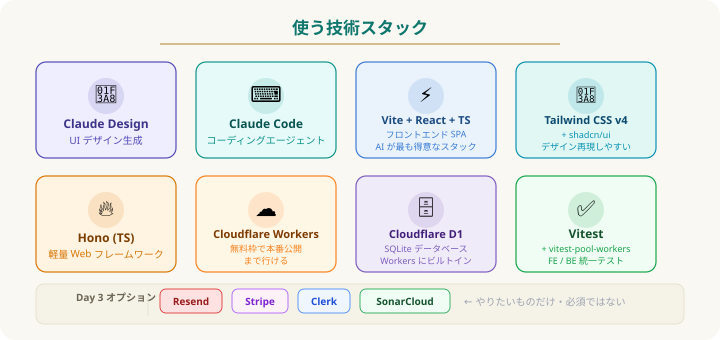
| カテゴリ | 技術 | 選定理由（一言） |
|---|---|---|
| AI（デザイン） | Claude Design | プロンプトから UI デザインを生成 |
| AI（実装） | Claude Code | ターミナルで動くコーディングエージェント |
| フロント | Vite + React + TypeScript | デファクト。AI が一番得意なスタック |
| スタイル | Tailwind CSS v4 + shadcn/ui | デザインの再現がしやすい |
| バック | Hono (TypeScript) | 軽量・Workers と相性抜群 |
| 実行基盤 | Cloudflare Workers | 無料枠で本番公開まで行ける |
| DB / KV | Cloudflare D1 / KV | Workers にビルトイン。セットアップ最小 |
| テスト | Vitest（+ vitest-pool-workers） | フロント・バックで統一できる |
| （Day 3） | Resend / Stripe / Clerk / SonarQube | オプション課題で登場、と予告だけ |
フロントとバックは1つのリポジトリ（モノレポ）で管理する。ルート直下に
frontend/（React）とbackend/（Hono）を並べる構成。最終的に配信は Worker 一本にまとめる。
事前準備（参加者に事前周知）
電話番号が必要なツールは無し。
⓪ 考えてくる
- 自分が作りたい SaaS の MVPをざっくり考えてくる（どんなサービスか・必須機能をどう満たすか）。迷う人は「玄米茶」をそのまま自分の題材にしてもよい
① 事前に作っておくアカウント（全員必須）
- GitHub — リポジトリ取得・SonarQube のログインにも使う（当日のアカウント作成は時間を食うので必ず事前に）
- Cloudflare — デプロイ先 [6] は全員必達なので事前に作っておく（アカウント作成は無料・電話番号不要）
② 事前にインストールしておくツール
- Claude Code CLI —
npm install -g @anthropic-ai/claude-codeでインストール。インストール＋ログインまで済ませておく- 余裕があれば security-guidance プラグイン（
/plugin install security-guidance@claude-plugins-official※失敗したらスキップ可）も入れておくと Day 1 から AI のコードを自動でセキュリティ点検してくれる（詳細は Day 1 のセキュリティ対策参照）
- 余裕があれば security-guidance プラグイン（
- Stripe CLI:
brew install stripe/stripe-cli/stripe - Node.js 18+（できれば 20+ LTS） / git
③ 当日取得するアカウント（無料・電話番号不要）
- Resend — メール課題 [7] で使用
- Stripe — 決済課題 [8] で使用
- Clerk（ユーザー認証 SaaS）— 認証課題 [9] で使用
- SonarQube（SonarCloud） — セキュリティ課題 [11]。GitHub アカウントでログインできる
Git ブランチ（dev → main）
前提: GitHub でリポジトリを新規作成し、ローカルに clone してから以下を実施する。フロント・バックは同じリポジトリ（モノレポ）で管理する。
SonarCloud はモノレポのリポジトリを丸ごと解析できる。
- 最初に
devブランチを切り、作業はすべてdevで進める（空リポジトリの場合は README 等を main に最初の commit で push してから dev を切る） - 区切りのいいところでこまめに commit / push（環境が壊れても作業を失わないための保険）
- 各日のクロージングで「dev に push 済みか」を必ず確認（翌日のキャッチアップが楽になる）
- 完成したら
dev→mainにマージ（main＝ 公開・解析対象の安定版）
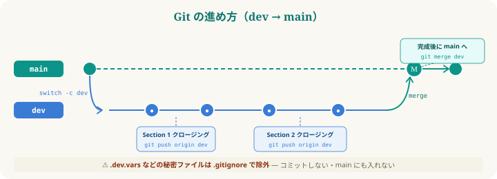
git switch -c dev # 最初に dev を切る
git push -u origin dev # 初回 push は -u で upstream を設定
# … dev で実装・こまめに commit / push …
git switch main
git merge dev # 完成したら main へ
git push origin main # main もリモートへ push- SonarQube は
main（または PR）を解析する想定（[11] セキュリティで使う） - 秘密ファイル（
.dev.vars等）は.gitignoreで必ず除外してコミットしない
Day 1: つくる（前半）
環境確認タイム
node -v（18 以上、できれば 20+ LTS）/git --version/claude --versionを確認- Claude Code がログイン済みで起動できるか（
claudeを叩いて会話できる状態か） - Claude Design に claude.ai でアクセスできるか（ブラウザでログイン確認）
- GitHub からリポジトリを clone できるか
- Cloudflare アカウントにログインできるか（Day 2 で
wrangler loginを実行します）
Claude Code のセキュリティ対策（最初に1回）
大前提（3日間ずっと効く）: 秘密情報（API キー・トークン）は Claude への指示にも会話にも貼らない。
.dev.varsに入れて参照させる。AI が書いたコードも読まずに承認しない。
秘密を Claude に読ませない設定
よくある勘違い: 「
.claudeignoreを作る」→ Claude Code に.claudeignoreは無い。正しくは.claude/settings.jsonのpermissions.denyで「読み取り禁止」を宣言する。
プロジェクト直下に .claude/settings.json を作り、秘密ファイルへの Read を拒否しておく（.claude/ ディレクトリがなければ mkdir -p .claude で作成）:
{
"respectGitignore": true,
"permissions": {
"deny": [
"Read(./.dev.vars)",
"Read(./**/.dev.vars)",
"Read(./.env)",
"Read(./.env.*)",
"Read(./secrets/**)"
]
}
}denyは最優先。万一「.dev.vars読んで」と頼んでも Claude は読めない＝事故防止- 秘密ファイル（
.dev.vars）が実際に登場するのは [4] バックから。設定だけ先に置いておくのがコツ
security-guidance プラグインを入れておく
security-guidance: Claude が生成したコードをバックグラウンドで自動セキュリティレビューしてくれるプラグイン。インジェクション・XSS・SSRF・IDOR・認可バイパスなど 25 種類以上の脆弱性クラスを継続的に見てくれる。「AI が書いたコードを AI が点検する」を自動でやってくれるのがポイント。
/plugin install security-guidance@claude-plugins-official※ コマンドが見つからない場合はスキップ可。Day 1〜2 の本編には影響しません。
- インストール後、
/plugin listでsecurity-guidanceがリストに出ることを確認 - 前提:
python3が PATH に通っていること - うるさく感じたら
SECURITY_GUIDANCE_DISABLE=1で全体オフできる（キルスイッチ）
[1] Claude Design でサイトデザイン作成
ゴール: LP および主要画面（マイページ・問い合わせ・サクセス）の雰囲気・カラー・セクション構成の方向性を決める（ピクセルパーフェクトなカンプは作らない）
アクセス: Claude Design は claude.ai にブラウザでログインして使う（Claude Code と同じアカウント）。左サイドバーの「Explore Claude」→「Claude Design」を選ぶか、https://claude.ai/design に直接アクセス。
なぜ Design.md を作らないのか
UX デザインの一般的なフローは「Design.md で構造・要件を言語化 → Claude Design でビジュアライズ」だが、今回は省略している。理由は、LP・問い合わせ・マイページ・購入完了というごく一般的な SaaS の画面構成であり、Claude Design 自体がそのパターンを熟知しているため、事前に言語化しなくても十分なアウトプットが出るから。Design.md が効くのは独自のユーザーフロー・複雑な要件・チームでの認識合わせが必要な場合。今回はいずれも該当しないので、サービスの内容を直接伝えるだけで十分。
流れ
- Claude Design に「何を・誰に向けて作るか／何を売るか／欲しい機能」を伝えてデザインを生成
- Claude Design は、トーンや配色など方向性を決める質問を自分から投げ返してくれる。だから最初から「和モダンで緑系で…」と細かく指定する必要はない。むしろサービスの中身（何のサービスか・売りたいもの・載せたい機能）を伝える方が効く
- 最初に渡すプロンプト例:
Slack AI サブスク SaaS『玄米茶』の LP を作りたい。 月額／年額プランを売りたい。 載せたいのは特徴・料金プラン・FAQ・お問い合わせへの導線。 ターゲットはライトエンジニア層。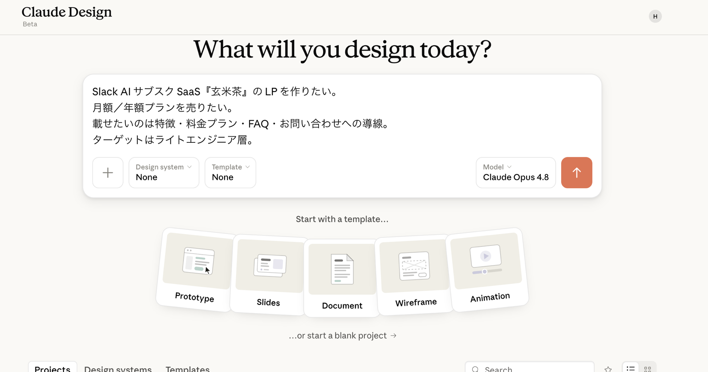
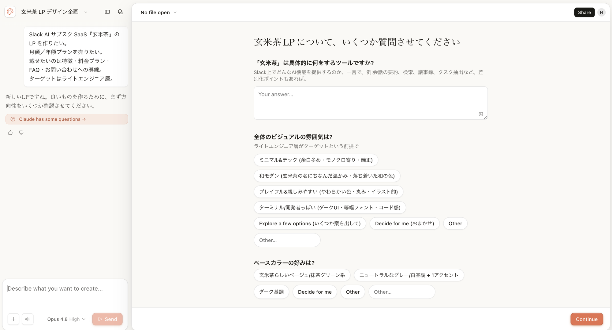
- 1回のプロンプトでデザイン案を3つ出してくれる
- まず LP だけを生成して1案選んでから、他ページ（/contact /mypage /success）を追加生成する（時間短縮のコツ。全ページを一度に指定しないこと。詳細は下記手順4参照）
時間短縮のコツ: 最初は他ページを盛らず LP だけで3案 → 1つ選ぶ → そのあとに他ページ（マイページ・問い合わせ・サクセス）を追加生成する
- 出てきた3案を見比べて1つ選ぶ
- 最初の1案でなんとなく進めず、3案を見比べてから決める（選択肢を見てから選ぶのが AI 活用のコツ）
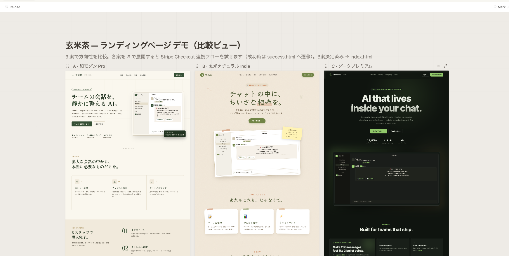
- トーン・配色・アクセントは画面上部タブの「Tweaks」から後で調整できる（プロンプトに盛り込まなくても、触って変えられる）
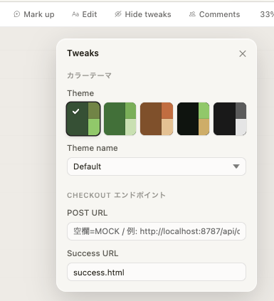
- 生成されたデザインを見直し、不要なセクションや機能はチャットで削除・修正を依頼する
- Claude Design はプロンプトの意図を超えて機能やセクションを追加することがある。「このセクションは不要です」「このボタンを消してください」とチャット欄で伝えれば修正してもらえる
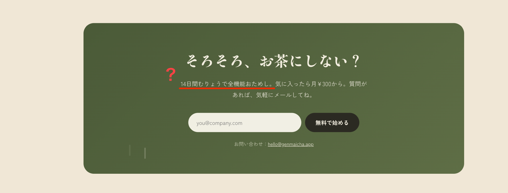
- 仕上がったデザイン（UX 案を含む）は Claude Design の Project を zip でエクスポートしておく
- 操作: 画面右上の「Share」ボタン → 「Project archive (.zip)」を選んでダウンロードする。
- → これを [2] でそのまま Claude Code に渡す。色やフォントを別途テキストで言語化する必要はない（デザインそのものを渡す方が早くて正確）
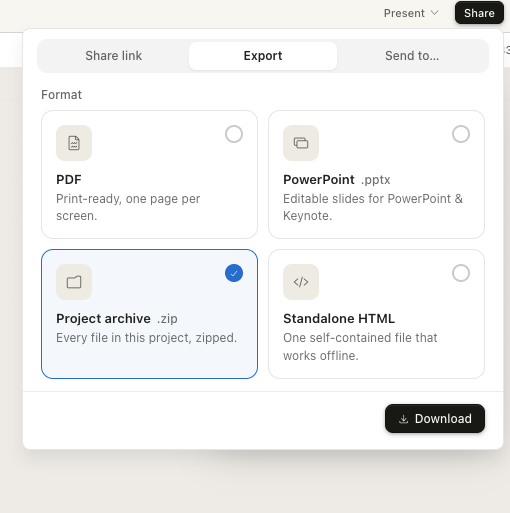
ポイント
- 「それっぽいものが作れた」で十分。完璧より方向性の確定が目的
- 指定するのは「中身（機能・売り）」。見た目の細部は Claude Design に任せる／後から Tweaks で触る
- いきなり1案に飛びつかない。デフォで出る3案を見比べて選ぶ
- 言語化テキストを書くより、デザイン Project（zip）を丸ごと渡すのが [2] への一番の橋渡し
✅ 完了の定義（これが満たせたら [2] へ）
- 必要な全画面（LP・マイページ・問い合わせ・サクセス相当）の方向性が決まっている
- 「使いたい機能すべてにたどり着ける」導線・要素（ページ・ボタン・リンク）が画面上に揃っている
- デザインを zip でエクスポートでき、[2] にそのまま渡せる状態になっている
[2] Claude Code でフロント作成
ゴール: デザイン通りの SPA（全画面）がローカル（localhost:5173）で動く（Day 1 終了時の到達点）
大事な前提：フロントとバックは1つのリポジトリ（モノレポ）で管理する
GitHub でリポジトリを1つ作成し、ルート直下にfrontend/（React）とbackend/（Hono）を並べる。最終的に配信は Worker 一本にまとめる（[4] 手順6）。
流れ
- フロントエンドとバックエンドのディレクトリを任意の名前で作成し、フロント側で Claude Code を起動する
Vite + React + TS + Tailwind v4 + shadcn/ui で SPA を作って。 ページは / /contact /mypage /success で、ルーティングは React Router を使って。 wrangler.toml も作って（name は <自分で決めた名前> にして）。wrangler.tomlは Cloudflare Workers の設定ファイル。「どんな名前で公開するか・どの DB や KV を使うか」などをまとめて定義する。wrangler deployするときにこのファイルが読み込まれる。nameがデプロイ先の URL（https://<name>.workers.dev）になるので、自分が使いたい名前を指定すること。 - [1] でエクスポートした Claude Design の Project（zip） を Claude Code に渡して実装を依頼する
このデザインファイルを参考に実装して。 （zip ファイルのパスを添える）- 言語化テキストではなくデザインそのものを渡す。色・フォント・余白の指定はそこから AI が拾う
- 全画面（
/contact/mypage/success）まで実装させる/contact /mypage /success の全画面も実装して。 API はまだないので各画面はモックデータで表示してOK。 （例: マイページはダミーのライセンス情報を表示）- 明日 [4] でモックを実 API 呼び出しに差し替える
npm run devで動作確認し、気になる点は Claude Code に修正を依頼する
共通パーツ（ナビ・フッター）の切り出しはAI が自然にやることが多いので、こちらから細かく指示しなくてよい。気になったら「共通化して」と頼む程度でOK。
ポイント
- API はまだ無い。この段階ではモックデータで画面が動く状態を作る、と割り切る
vite.config.ts はこの内容で Claude Code に作らせてよい:
import { defineConfig } from "vite"
import react from "@vitejs/plugin-react"
import tailwindcss from "@tailwindcss/vite"
import path from "node:path"
export default defineConfig({
plugins: [react(), tailwindcss()],
resolve: { alias: { "@": path.resolve(__dirname, "./src") } },
})✅ 完了の定義（Day 1 の到達点）
npm run devでhttp://localhost:5173を開くと LP が崩れずに表示される（Tailwind が効いている）//contact/mypage/successの全画面が実装され、React Router で遷移できる（データは API 前なのでモック）- デザイン [1] の方向性が画面に反映されている
[3] Day 1 フロントデプロイ（Cloudflare Workers）
ゴール: フロントが完成したらすぐに公開 URL を手に入れる（バックは Day 2 で繋ぐ）
Cloudflare Workers は静的ファイルも配信できる。今日はフロントだけを Worker としてデプロイし、Day 2 で API を追加して同じ Worker に統合する。デプロイ先は最初から
workers.devの 1 URL に統一する。
流れ
- wrangler をグローバルインストールする:
npm install -g wrangler - Cloudflare にログインする:
wrangler login # ブラウザが開く → Cloudflare 上で「許可」する wrangler whoami # ログインできたか／想定アカウントかを確認- 会社用・個人用など複数アカウントを持っている人は
whoamiで取り違えていないか必ず確認（別アカウントに資源を作る事故を防ぐ）
- 会社用・個人用など複数アカウントを持っている人は
- フロントのルートにいることを確認し、ビルドする:
npm run build - Cloudflare Workers にデプロイ:
wrangler deploy初回は
wrangler.tomlのnameが Worker 名として登録される。2回目以降は同じコマンドで上書きデプロイされる。 - 発行された URL（
https://<name>.<account>.workers.dev）をブラウザで開いて LP が表示されることを確認 🎉 - URL をチャットに貼って共有する
Day 1 のデプロイは API が無いのでデータはモック表示のまま。Day 2 で API を追加して同じ URL のまま再デプロイする。
✅ Day 1 の到達点
localhost:5173で LP・全ページが表示できるhttps://<name>.<account>.workers.devで公開 URL から LP が表示できる- dev ブランチに push 済み
Day 1 クロージング
- 各自の公開 URL をスクリーンで何人かに見せてもらう（5分）
- 明日は API を追加して同じ Worker URL のまま再デプロイします
.gitignoreにnode_modulesとdistが含まれているか確認する- フロントのリポジトリを dev ブランチで push する（詳細は Git ブランチ 参照）
Day 2: つなぐ・公開する
[4] Claude Code でバック作成
ゴール: フロントと API がつながり、ローカルで一通りの機能が動く
大事な前提：バックはモノレポ内の
backend/で作業する
[2] で作成したリポジトリのbackend/ディレクトリで Claude Code を起動して作業する。最終的に配信は Worker 一本にまとめる（手順6）。
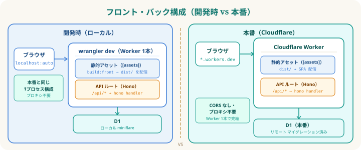
流れ
- Hono + Cloudflare Workers のプロジェクトを Claude Code に作らせる（
backend/）- 成果物:
backend/に Hono の雛形（src/index.ts・wrangler.toml・package.json）が揃った状態 npm run devでlocalhost:8787が起動し、GET /が返ってくれば OK.gitignoreも一緒に作らせる（node_modules/dist/.dev.varsなどを除外）
- 成果物:
- クラウド資源（DB・KV）を作って
wrangler.tomlに登録する-
D1 … Cloudflare の SQLite データベース。問い合わせ・ライセンスなどを保存する
KV … Redis に近い NoSQL ストア。キーと値のペアで高速に読み書きできる（例:"ip:1.2.3.4" → 5回）。このアプリではレート制限のカウンタに使う - Claude Code にまとめて任せる:
Cloudflare の D1 と KV を作成して、wrangler.toml に書き込んで。 この時、wrangler.toml の name はフロントの wrangler.toml と同じにして。name をフロントと同じにする理由: Day 2 でバックをデプロイすると同じ name の Worker を上書きする形になり、Day 1 で手に入れた URL（
https://<name>.workers.dev）がそのまま引き継がれる。name が違うと別 URL になってしまう。
なぜローカルで使わないのに先に作るのか？ —
wrangler.tomlに実在のdatabase_id/ KV id が書かれていないと、[6] のリモートデプロイが失敗するから。ローカル開発自体はクラウドの D1/KV に触れないので、ローカルとクラウドのデータは別物（詳細は手順4）。 -
D1 … Cloudflare の SQLite データベース。問い合わせ・ライセンスなどを保存する
- API をまとめて実装させる
- 必要な機能を日本語でまとめて伝え、Claude にいっぺんに実装させてよい。API のパス・入出力の設計も AI に任せる
- この題材で要る機能の例:
- 問い合わせを受け付けて保存する（同一 IP からの連投はレート制限で弾く）
- ログイン中ユーザーの情報を返す（Day 2 はモック認証でよい。リクエストヘッダのメールを信頼して返すだけ。本物の Clerk は Day 3 [9]）
- ライセンスキーを検証する
- 保存するデータの中身（例: 問い合わせ＝名前／メール／本文）だけ先に決めておくと AI が迷わない。テーブル定義は AI に書かせ、
migrations/以下に置くよう指示する
frontend/ のコードを見て、それに対応するバックエンドを backend/ に実装して。 D1 と KV を使うこと。マイグレーションファイルは migrations/ 以下に作って。 - ローカル用の DB を用意する（マイグレーション）
ローカルの D1（
--local）とクラウドの D1（--remote）はデータが別物。開発中は手元だけを使い、本番への反映は [6] デプロイ時にまとめて行う。タイミング コマンド 対象 API 実装中（今ここ） npm run db:migrate:local手元の D1（ローカル） デプロイ直前（[6]） npm run db:migrate:remoteCloudflare の D1（本番） 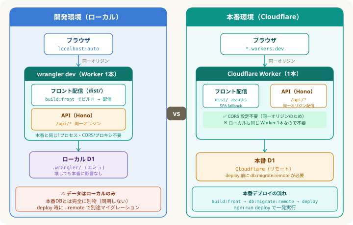
npm run db:migrate:local # 手元(ローカル)の D1 にテーブルを作る - フロントのモック表示を実 API 呼び出しに差し替える
- 前提:
backendでnpm run build:front && npm run dev（:8787）を起動した状態で作業する - Claude Code への指示例: 「モックを実 API 呼び出しに変えて。バックは localhost:8787」
- 差し替え後は
http://localhost:8787でブラウザ確認する
- 前提:
- 配信を一本化する（本番の形にする）
- フロントを
dist/にビルドし、Worker から配信する（未知パスは SPA フォールバックでindex.html） - フロントと API が同一オリジンになるため、本番では CORS 設定が不要になる
- モノレポ内の
frontend/をビルドし、配信だけ1つの Worker にまとまるイメージ - Claude Code に「
wrangler.tomlに[assets]を追加してフロントの dist を配信させて」と依頼する
- フロントを
必要な npm scripts（よく使う操作に名前を付けておく）
wrangler … の長いコマンドを毎回打つ代わりに、よく使う操作を package.json の script にまとめておくと楽。確認も追加も Claude Code に任せる：
| script | 中身 | 用途 |
|---|---|---|
dev | wrangler dev | ローカル起動（:8787） |
build:front | npm --prefix ../frontend run build | フロントを dist/ にビルド |
db:migrate:local | wrangler d1 migrations apply DB --local | ローカル D1 にマイグレーション |
db:migrate:remote | wrangler d1 migrations apply DB --remote | 本番 D1 にマイグレーション（[6]で使う） |
deploy | npm run build:front && wrangler deploy | ビルド→デプロイ一発（[6]で使う） |
test | vitest run | テスト（[5]で使う） |
package.json に以下の npm scripts が無ければ追加して。
- build:front: npm --prefix ../frontend run build
- db:migrate:local: wrangler d1 migrations apply DB --local
- db:migrate:remote: wrangler d1 migrations apply DB --remote
- deploy: npm run build:front && wrangler deploy
- test: vitest runローカルでの動かし方
cd backend && npm run build:front && npm run devフロントを変更したら毎回 npm run build:front が必要。http://localhost:8787 で確認する。
ポイント
- 認証（Clerk）・決済（Stripe）・メール（Resend）は Day 2 では深追いしない → Day 3 のオプション課題 [7][8][9] で扱う
- Day 2 のログイン周りはモック認証でよい（手順3）。後から Clerk に差し替えやすい作りにしておくと教材としても良い
- 秘密情報は
.dev.vars（ローカル）/wrangler secret put（本番）で管理する。コードへのハードコードや AI への指示文への貼り付けは禁止 - Day 2 core で必要な環境変数は最小限。Stripe / Clerk / Resend のキーがなくても起動できる:
ORIGIN/FRONTEND_ORIGIN（ローカルはhttp://localhost:8787）と問い合わせ用のEMAIL_*/CONTACT_TO程度wrangler.tomlの[vars]に書き、ローカル上書きは.dev.varsに書く（.gitignore済みか確認）
✅ 完了の定義（[5] へ進む条件）
ローカル（npm run build:front && npm run dev で :8787）で次がすべて満たせること（レスポンスの形は AI に決めさせた API に読み替える。下の値は一例）：
curl http://localhost:8787/→ 200 で LP の HTML が返るcurl http://localhost:8787/mypage→ 200（SPA フォールバックが効いている）
（SPA フォールバックが効かない場合はwrangler.tomlの[assets]にnot_found_handling = "single-page-application"を追加する）- 認証が要る API（例
/api/me）は未認証だと弾かれる（401 など） - 必須項目が欠けた問い合わせはバリデーションで弾かれる（400 など）
- そして必ず「人の目」で確認する: ブラウザで実際に画面を操作（問い合わせ送信・マイページ表示等）し、実 API とつながって期待どおり動くこと
- ⚠️ curl が通っても、ブラウザでは動かないことがある（CORS・表示・状態管理など）。コマンドの結果だけで満足せず、画面で目視確認するまでが完了
[5] 自動テストの実装
ゴール: 「正しいリクエストは通る・壊れたリクエストは弾く・ログインなしで保護 API に入れない」を npm test で自動確認できる状態にする。デプロイ前にここを緑にする
考え方（テスト戦略）
テストは3層。上から順に費用対効果が高い:
- バックエンド統合テスト — Hono app にリクエストを投げて検証（Vitest +
@cloudflare/vitest-pool-workers、D1/KV は実バインディング） - 純粋関数の単体テスト — キー生成・マスク処理など
- フロントのコンポーネントテスト — 状態分岐が多いものだけ（全網羅しない）
外部サービスへの fetch はモックする（テストを外部に依存させず、速く・安定して回すため）。
Claude Code へ渡すプロンプト例
「テスト観点の固定表」はあえて載せない。こちらが観点を決め打ちすると「表に無い＝テストしない」になりがち。どこを・どうテストするかも含めて AI に出させ、人はそれをレビューする方が、抜けが出にくい。
以下のプロンプトをそのまま Claude Code に渡して始めると効率的:
このバックエンド（backend）のテストを書いてください。
まず tests/ ディレクトリとテスト方針を docs/TEST.md にまとめてから実装してください。
カバーしてほしい範囲:
1. 純粋関数のテスト（キー生成・バリデーション等）— テスト環境の動作確認も兼ねる
2. POST /api/contact の正常系（正しい入力 → 200）と異常系（必須項目が空 → 400）
3. GET /api/me の未認証アクセス（Authorization ヘッダなし → 401）
使用する環境: @cloudflare/vitest-pool-workers + defineWorkersConfig
外部サービスへの fetch はすべてモックしてください。流れ
- 上記プロンプトを Claude Code に渡してテスト方針 + テストファイルを一気に生成させる
- 生成されたテストを読んで観点の抜けがないか確認し、不足があれば「〇〇のテストも追加して」と追加依頼する
npm testでグリーンを確認
ポイント
- AI が書いたコードこそテストが要る（出力を鵜呑みにせず、テストで裏付ける）
- 方針（何を守りたいか）を先に書かせてから実装させると精度が上がる（観点の洗い出しごと AI に任せてよい）
- Day 3 でオプション機能を追加するとき、このテストが安全網になる
⚠️ ハマりどころ: テスト環境の設定
Hono のバックは Node.js ではなく Cloudflare Workers という独自の実行環境で動く。そのため通常の Vitest（Node.js 上で動く）では D1・KV などの Workers 固有の機能が再現できず、テストが動かない。
@cloudflare/vitest-pool-workers を使うと、Workers のローカルシミュレーター上でテストが走り、D1・KV も含めた本番に近い状態で確認できる。設定の骨格は以下を Claude Code に渡すだけでよい:
import path from "node:path"
import { defineWorkersConfig, readD1Migrations } from "@cloudflare/vitest-pool-workers/config"
export default defineWorkersConfig(async () => {
const migrations = await readD1Migrations(path.join(__dirname, "migrations"))
return {
test: {
poolOptions: {
workers: {
wrangler: { configPath: "./wrangler.toml" },
miniflare: {
bindings: { TEST_MIGRATIONS: migrations, ORIGIN: "http://localhost:8787" },
},
},
},
},
}
})外部サービス（Resend・Stripe など）のキーはダミー文字列を渡す。テスト中に実際の送信・課金が走らないようにするため。test/setup.ts の作成は Claude Code に「vitest-pool-workers の test/setup.ts も作って」と依頼する。
✅ 完了の定義（Day 2 の到達点・前半）
npm testがグリーン（全ケース pass）- 最低限カバーできている：
- 外部サービスに依存しない純粋な関数（キー生成・文字列マスク等）のテストが1つ以上
- 正しい入力で API が成功レスポンスを返すことを確認するテスト（例: 問い合わせフォームに正しい内容を入れて送ったとき、受付完了が返る）
- 不正な入力で API が適切にエラーを返すことを確認するテスト（例: 必須項目が空のまま送信したとき、入力エラーとして弾かれる）
- 未認証でログインが必要な API にアクセスしたとき、アクセスが拒否されることを確認するテスト（例: ログインせずにマイページ API を叩いたら弾かれる）
- → これが緑になったら [6] デプロイへ
[6] Cloudflare にデプロイ
ゴール: 自分の URL（https://<name>.workers.dev）で世界に公開（Day 2 のフィナーレ）
流れ
wrangler.tomlを確認（D1/KV の binding id が Cloudflare ダッシュボードのリソース ID と一致しているか・[assets]にdirectory = "dist"とnot_found_handling = "single-page-application"が含まれているか）wrangler.toml を確認して。 ・D1/KV の binding id が `wrangler d1 list` / `wrangler kv namespace list` の出力と一致しているか ・[assets] に directory = "dist" と not_found_handling = "single-page-application" が含まれているか チェックして、問題があれば修正して。- リモート DB のマイグレーション:
npm run db:migrate:remote⚠️ 初回デプロイ時: D1 がリモートに未作成の場合は先に
wrangler d1 create <db名>を実行し、発行されたdatabase_idをwrangler.tomlに反映してから `npm run db:migrate:remote` を実行する - Secrets の投入:
wrangler secret put <NAME>（必要なものだけ）
（Day 2 core ではこの手順はスキップ可。Stripe/Clerk/Resend を使う場合のみ実施 — Day 3 [7][8][9] 参照） - デプロイ:
cd backend npm run deploy # フロントのビルド → wrangler deploy まで一発 - 発行された URL にアクセスして動作確認 🎉
- 発行された URL をチャットに貼って共有する
ポイント
- [5] のテストが緑なのを確認してから公開する（テスト → デプロイ の順）
- ローカル（
--localの D1）と本番（リモート D1）はデータが別物 - Cloudflare の無料枠の範囲で完結する
- Day 2 core では Secrets 投入（手順3）は不要（Stripe/Clerk/Resend を使う [7][8][9] で初めて要る）
⚠️ ハマりどころ: Workers デプロイ
npm run deployが「フロントのビルド込み」なので、ビルドが通らないとデプロイも止まる → デプロイ前にローカルでnpm run build:frontが成功するか確認しておくと安全- リモート D1 のマイグレーション（
db:migrate:remote）を忘れると、API が「テーブルが無い」で失敗する
✅ 完了の定義（Day 2 の到達点・後半）
- 自分の
https://<name>.workers.devにブラウザでアクセスして LP が表示される - 本番 URL で
/mypage等のルーティングも 404 にならず動く（404 になる場合は wrangler.toml の [assets] にnot_found_handling = "single-page-application"を追記してから再デプロイ） - （API を使う画面が）本番でも動作する
- （余裕があれば）公開した本番 URL でトップページ・
/mypage・API を1つブラウザで開き、ローカルと同じ挙動か目視確認する
Day 2 クロージング
- 全員が「
npm testグリーン +workers.dev公開 URL」に到達しているか確認 - Day 1 の
pages.devURL から Day 2 のworkers.devURL への再デプロイ完了を確認（バック API が繋がっていること） - dev に push 済みかを確認（必要なら
dev→mainにマージして安定版を残す） - Day 3 のオプション課題から興味のあるものを選ぶ（Stripe / Clerk / Resend のアカウントを事前に作っておくとスムーズ）
Day 3: 育てる（オプション課題 + 発表会）
Day 3 最後の 30 分（1:30〜2:00）は最終発表会です。自分の公開 URL のデモを 1 人 3 分で発表します。詳細はページ末尾の「ラップアップ・発表会」を参照してください。
（難易度の目安: ★☆☆＝易しい / ★★☆＝ふつう / ★★★＝難しい）
| # | タスク | 難易度 | 詳細へ |
|---|---|---|---|
| [7] | メール（Resend） | ★★☆ | → [7] メール |
| [8] | 決済（Stripe） | ★★★ | → [8] 決済 |
| [9] | ID 連携（Clerk） | ★★☆ | → [9] ID 連携 |
| [10] | 運用保守（Cloudflare ログ確認・スキル化） | ★★☆ | → [10] 運用保守 |
| [11] | セキュリティ（SonarCloud 静的解析・脆弱性レビュー） | ★★★ | → [11] セキュリティ |
まず全課題に共通すること
- 秘密情報の置き場所（本編 [4] のおさらい）
キーはコードにも AI への指示にも貼らない。置き場所 ローカル backend/.dev.vars（.gitignore済み。雛形は.dev.vars.sample）本番 wrangler secret put <NAME>または Cloudflare ダッシュボードの環境変数.dev.varsに入れて参照させる。 - 必要な環境変数は、まず AI に聞く →「この機能に要る環境変数を
.dev.vars.sampleに追記して」 .dev.vars.sampleを.dev.varsにコピーして実際の値を入力する（cp .dev.vars.sample .dev.vars）。.dev.varsが既にある場合は必要な行だけ追記する.dev.varsを書き換えたらnpm run devを再起動（読み込みは起動時）- npm パッケージ（SDK）も AI が入れてくれる（Resend / Stripe SDK・
@clerk/*など）。自分で調べて入れる必要はない - 各サービスのログインは基本 Google SSO（電話番号不要）。Stripe はメールアドレス登録（Google SSO ログイン後、リダイレクト先で設定）
- どの課題も流れは共通:
- 外部サービスでキー（と必要なら ID）を取得
.dev.varsに入れてローカルで動かす- 動いたら、同じ値を本番にも入れてデプロイ（
wrangler secret put/ ダッシュボードの環境変数）
- オプションは必須ではない。興味のあるものから着手してよい（やらない／1つだけ、も可）。Day 2 が未了なら、その続きを優先しても構わない
[7] メール機能の実装（Resend）★★☆
お題: 問い合わせ通知メール／ライセンスキー送付メールを実装する
学び: 外部 API 連携の基本形・Secrets 管理
サービス側の準備
- https://resend.com/login で Google SSO ログイン
- 左タブ API keys → Create API Key（権限は Sending access で十分。Sending domain は All domains を選択。名前は各自）
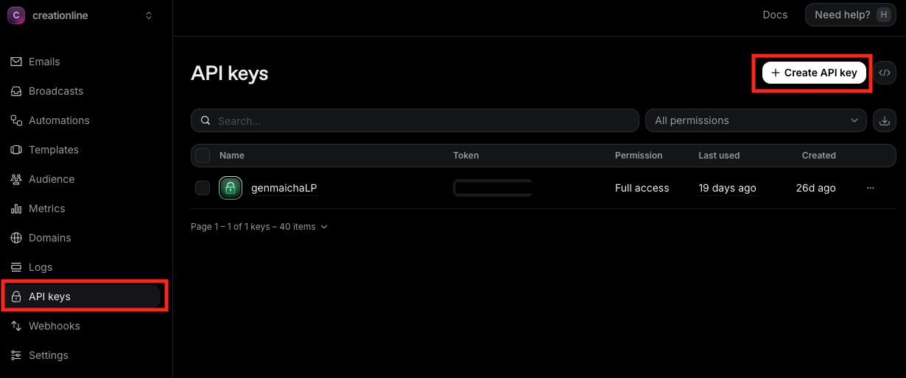
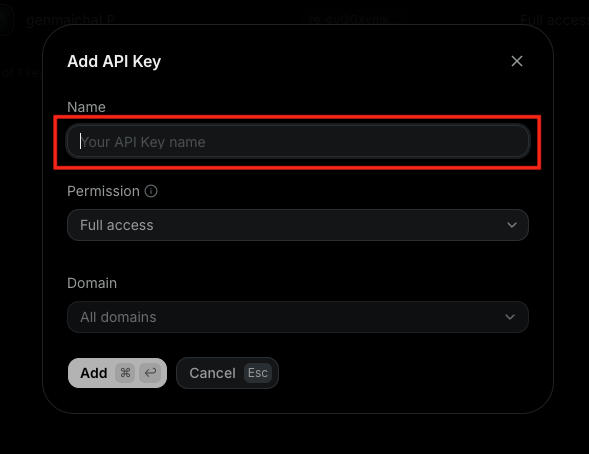
- 発行された API キーを
.dev.varsにセット（.dev.varsはbackend/直下にある Cloudflare Workers のローカル用環境変数ファイル。存在しない場合は新規作成）（例RESEND_API_KEY=...）
送信ドメインはどうする？（ここがつまずきやすい）
独自ドメインから送るには DNS 検証が必要で、それは自分のドメインが決まる公開後の話。ワークショップでは次の方針を推奨：
- 動作確認は Resend のテスト用アドレス
onboarding@resend.devを From に使う- 「自分宛に届く」を確認するには十分
- 独自ドメインからの送信は任意（やりたい人だけ、デプロイ後に DNS を設定）
重要: この From はドメイン検証なしで送れるが、宛先は Resend に登録したアカウントのメールアドレス1つだけに限られる。それ以外のアドレスに送ると Resend がエラーを返す。
API キー作成時のスコープ設定について（本ワークショップでの方針）
Resend の API キー作成画面では「Sending domain」を絞り込めますが、本ワークショップでは "All domains" を選んで作成してください。独自ドメインを別途追加・DNS 検証しないと特定ドメインのキーが発行できず、手順が止まってしまいます。
実装〜確認
- From / To をどうするかも含めて AI に相談し、まずローカルで往復させる
- 送ったら Resend ダッシュボードの Logs で Status を確認
- 200 以外が出たら、エラー本文をそのまま AI に渡して直す
- 本番でも使うなら、
RESEND_API_KEYを本番側にも設定してデプロイ（共通②③）
✅ 完了の定義
自分宛にメールが届けば完了。余裕があれば: 連投対策（短時間に何度も送ると送りすぎ拒否エラーが返る）まで実装する。
[8] 決済機能の実装（Stripe）★★★
お題: プラン購入（Stripe Checkout）→ Webhook でライセンス自動発行
参考実装: backend/src/stripe.ts / license.ts
学び: Webhook の二重発行防止（同じイベントが再送されてもライセンスを1件だけ出す）・署名検証
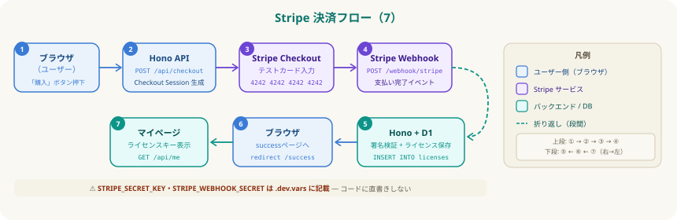
Day 2 で「自前発行」していたライセンスを、決済イベント起点の自動発行に置き換える課題。手順が多いので 5 フェーズに分けて進める（①アカウント準備 / ②プラン作成 / ③ローカルWebhook検証 / ④本番Webhook設定 / ⑤つなぎ込み）。
① アカウントとキーの準備
- https://dashboard.stripe.com/login で Google SSO ログイン
- サンドボックス（テストモード）はデフォルトで有効（ワークショップは終始これ）
- 必要な環境変数を AI に聞き、
.dev.vars.sampleに雛形を作る - Developers → API keys から Secret key（
sk_test_...）を取得 →.dev.varsにセット - （Stripe CLI が未インストールの場合は事前準備 ② を参照してインストールしてから実行）ターミナルで
stripe loginし、Stripe CLI にアカウントを認証
② プラン（商品）を作る
商品カタログ → ＋商品を作成で、2つの継続課金プランを作る：
| プラン名 | 種別 | 金額 | 請求 |
|---|---|---|---|
| 月額プラン | 継続 | ¥300 JPY | 毎月 |
| 年額プラン | 継続 | ¥3000 JPY | 毎年 |
- 作成後、各プランの Price ID（
price_...）を控える- 上の手順のとおり、ワークベンチのデータマップから取得する。Checkout に渡すのはこの Price ID
- （
prod_...は商品そのものの ID。コードで使うのはprice_...の方）
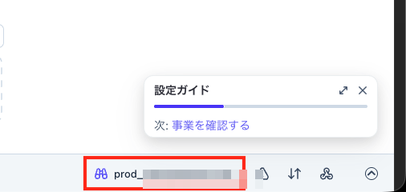
① 商品カタログで該当のプランを選択したのちに、下部の prod_...をクリック → ワークベンチが開く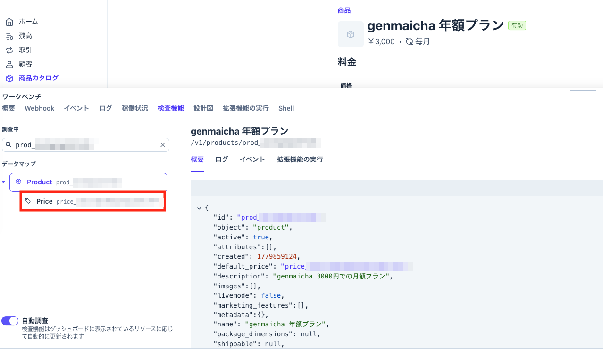
② ワークベンチのデータマップで Product（prod_...）配下のPrice（price_...）を確認 - 2つの Price ID を
.dev.varsにセット（例PRICE_MONTHLY=price_.../PRICE_YEARLY=price_...） - 実装: 「Checkout セッションを作成する API エンドポイント（
stripe.ts）とライセンス発行ロジック（license.ts）を実装して」と Claude Code に依頼する
③ ローカルで Webhook を検証する
前提: stripe.ts / license.ts の実装（AI への依頼）が完了してから進む。実装が未完了の場合は先に「Checkout セッションを作成する API エンドポイントと Webhook 受信エンドポイントを実装して」と AI に依頼する。
ローカル環境では Stripe から直接 Webhook が届かない（インターネットに公開されていないため）。Stripe CLI の
stripe listenを使って、Stripe のイベントを手元の :8787 に転送する必要がある。ターミナルを2つ使う。バック（
npm run dev、:8787）を起動したまま、別ターミナルでstripe listenを動かす。
- 別ターミナルで Stripe CLI を listen（転送先・ポートは AI に確認。例:）
stripe listen --forward-to localhost:8787/webhook/stripe - listen 開始時に表示される Webhook 署名シークレット（
whsec_...）を.dev.varsにセット（例:STRIPE_WEBHOOK_SECRET=whsec_...）してnpm run devを再起動（stripe listenは止めなくてよい。バックのターミナルだけ Ctrl+C → 再起動） - テストカードで購入して、購入 → Webhook 受信 → ライセンス発行までローカルで通す
- テストカード番号は
4242 4242 4242 4242（有効期限＝未来の任意の日付／CVC＝任意の3桁） - テストモードのため実際の課金は行われない。本物のカードを入れても安全だが、テストカードを使うのが確実
- テストカード番号は
④ 本番（デプロイ後）に Webhook を設定する
- デプロイ前に、ローカルの
.dev.varsに入れた値（Secret key・Price ID など）を本番側にも設定しておく（wrangler secret put/ ダッシュボード）。※ Webhook 署名シークレットだけは本番用を後から（手順6）入れる - 本編 [6] の手順で Cloudflare にデプロイ
- Stripe ダッシュボードの検索窓で「Webhook を作成」を検索して進む
checkout.session.completedは必須で選ぶ（他に必要なイベントは AI に聞いて選ぶ）- エンドポイント URL に Cloudflare の公開ドメイン（例
https://<name>.workers.dev/webhook/stripe）を入力 - 作成後に表示される本番用の署名シークレットを取得 → Cloudflare の環境変数に投入
- 本番で決済確認
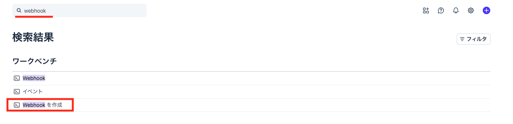
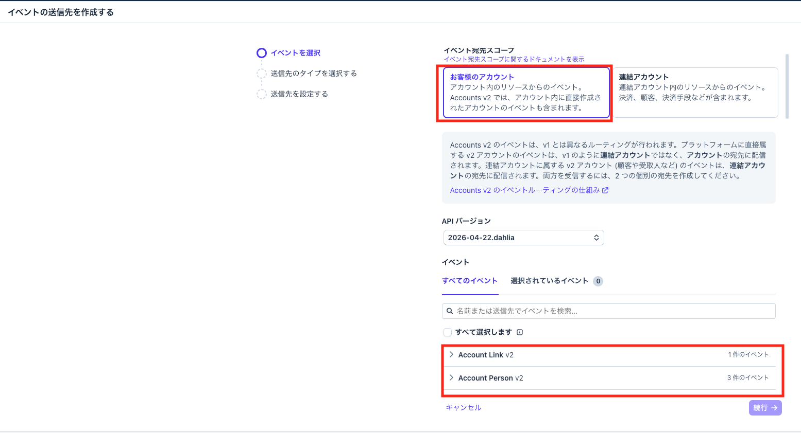
checkout.session.completed は必須で選ぶ（他に必要なイベントは AI に聞いて選ぶ）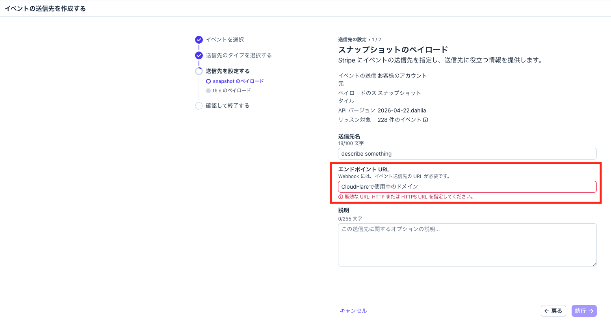
https://<name>.workers.dev/webhook/stripe を入力して「続行」⑤ 購入後の戻り先とマイページ表示（つなぎ込み）
- Checkout には決済後の戻り先 URL（
success_url/cancel_url）が要る。成功時は Day 2 で作った/successページにつなぐ（AI に「購入後/successに戻して」と頼めばよい） - 「マイページにライセンスが出る」ための紐付けに注意:
- Webhook で発行したライセンスは購入者の emailに紐づく。マイページはログイン中ユーザーの emailでライセンスを引く
- [9] Clerk をやらない場合は、Day 2 のモック認証の email（ヘッダ
x-user-email）と購入時の email を一致させること。ここがズレると「購入したのにマイページに出ない（別人扱い）」になる（フロントのリクエストヘッダX-User-Emailに固定値（例: test@example.com）をセットし、Stripe Checkout のcustomer_emailにも同じ値を渡すことで一致させる）
⚠️ ハマりどころ
- 署名シークレットはローカル（③）と本番（④）で別物。混同しない
- 署名検証は「生のリクエストボディ」で行う（フレームワークが body をパースする前に処理する）
- 二重発行防止: Stripe は同じイベントを複数回送ってくることがある。同じ購入イベントが2回届いてもライセンスを1件だけ発行するように実装する（処理済みのイベント ID を記録して、既に処理済みなら無視する）
- email の不一致で「マイページに出ない」が起きやすい（上記の紐付けを参照）
✅ 完了の定義
テストカードで購入 → マイページにライセンスが表示されれば完了。余裕があれば二重発行防止まで確認する。
[9] ID 連携機能の実装（Clerk）★★☆
お題: ログイン必須のマイページ（未ログイン → サインインへリダイレクト）
参考実装: @clerk/clerk-react（フロント）＋ Hono 側でトークン検証
学び: JWT 検証をバックでやる理由（フロントの見た目だけの保護は無意味）
Day 2 でモック認証にしておいた
GET /api/me（backend/src/routes/me.tsなどのハンドラ）を、本物の Clerk 認証に差し替える課題。Claude Code に『Day 2 のモック認証を Clerk トークン検証に差し替えて』と指示するだけで進められる。
サービス側の準備
- https://dashboard.clerk.com/ で Google SSO ログイン
- アプリケーションを作成
- Configure → User & Authentication を開き、サインイン方法を絞る：
- Email タブ → "Sign-up with email" と "Sign-in with email" の両方をオフ（メール認証は使わない）
2つとも下げる必要があるので注意（どちらか片方だけでは不十分）：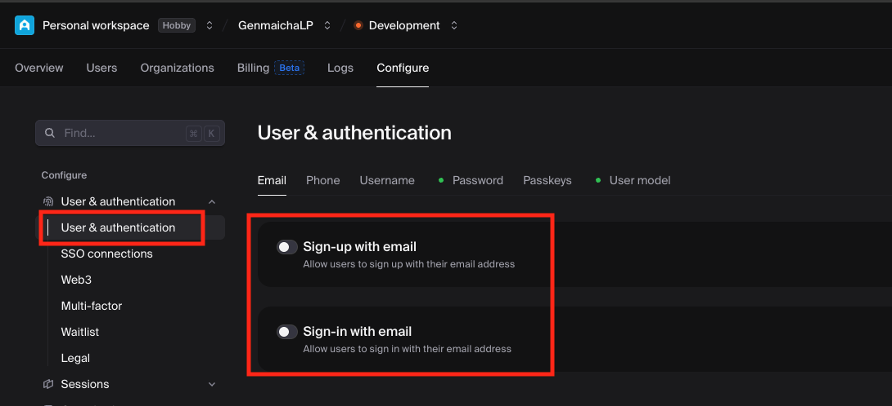
- SSO Connections で Google が有効になっていることを確認
- Email タブ → "Sign-up with email" と "Sign-in with email" の両方をオフ（メール認証は使わない）
- Developers → API keys から2つのキーを取得し、置き場所を分ける（ここを間違えやすい）：
キー 置き場所 性質 Publishable key フロントの env（Vite なら frontend/.envにVITE_CLERK_PUBLISHABLE_KEY=...）公開してよい Secret key ローカル: バックの backend/.dev.vars/ 本番: Cloudflare ダッシュボードの環境変数またはwrangler secret put CLERK_SECRET_KEY秘密。漏らさない 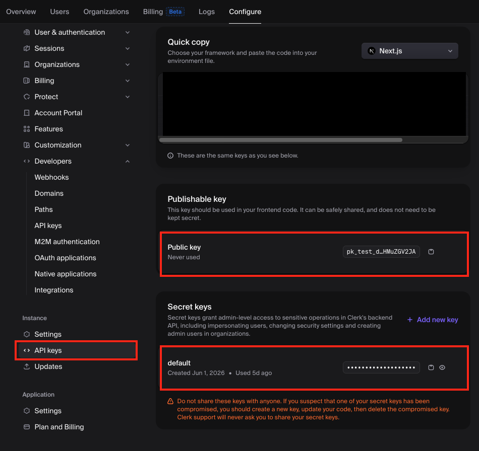
実装メモ
- 必要なパッケージ（フロント
@clerk/clerk-react／ バック@hono/clerk-auth）も AI が導入してくれる - フロントはアプリを
<ClerkProvider>で包み、サインイン UI を置く。未ログインなら/mypageに入れないようガード - JWT 検証は
@hono/clerk-authが推奨（バックでのトークン検証が一気に楽になる） - バックは必ずトークンを検証してから保護 API を返す（フロントの出し分けだけでは保護にならない）
- Day 2 のモック認証（ヘッダ
x-user-emailを信頼）を、この Clerk トークン検証に差し替えるのがゴール
Clerk ダッシュボード自体への管理者ログインは Google SSO で行います（手順1〜3）。参加者が自分のアプリにサインインする際も、上記の設定（メール認証オフ・Google SSO オン）が適用されるので Google アカウントでサインインします。
⚠️ ハマりどころ
- 本番（デプロイ後）でサインインが弾かれるときは、Clerk ダッシュボードに公開ドメイン（
https://<name>.workers.dev）を許可オリジンとして登録する
✅ 完了の定義
未ログインで /mypage に入れない・GET /api/me が認証必須になっていれば完了。
[10] 運用保守★★☆
お題: 公開後の運用を体験する（監視・ログ・障害特定・対策・コスト）
参考実装: .claude/skills/（運用スキル一式）
学び: 公開後の「運用」を Claude Code のスキルで仕組み化する
まず: Cloudflare API トークンを用意する
wrangler だけだと取得できる情報に制限がある。ログ集計やコスト試算には API トークンが要る。
- Cloudflare ダッシュボード右上のアイコン → Profile を選択
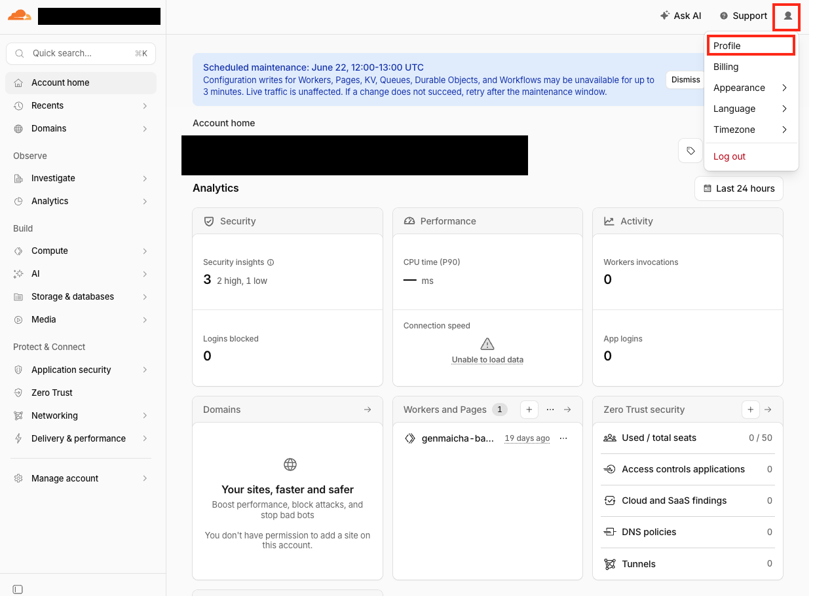
- 左メニューの API Tokens → Create Token をクリック
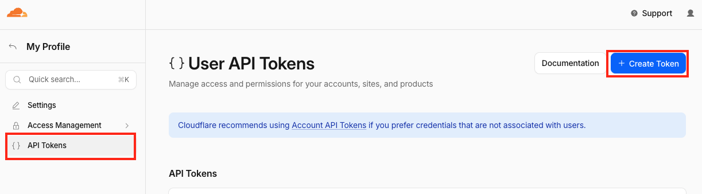
- 「Create Custom Token」の Get started をクリック
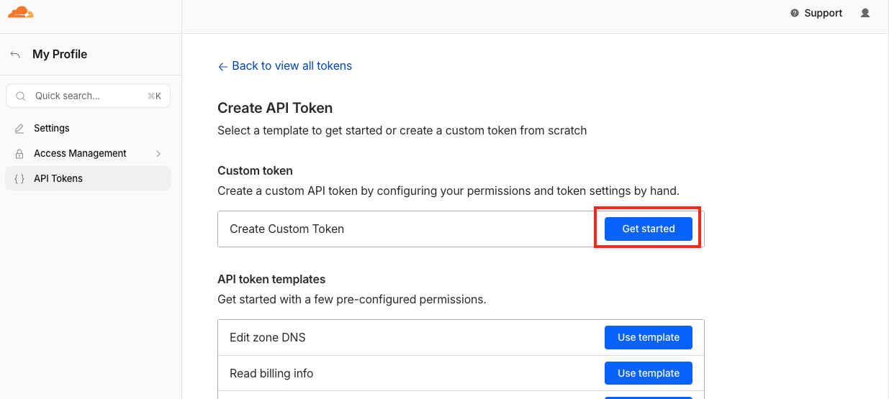
- Token name を入力し、Permissions を Account / Account Analytics / Read にして作成
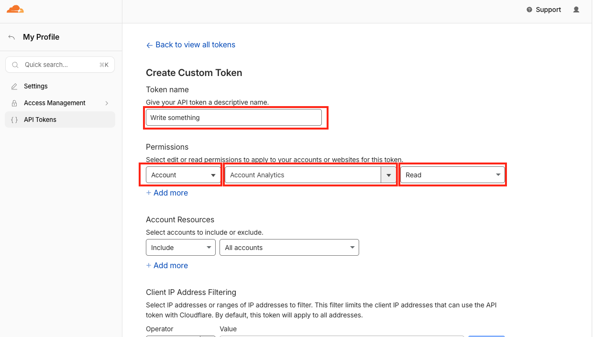
- 取得したトークンを
backend/.dev.varsに追記（例CLOUDFLARE_API_TOKEN=...）
このトークンは Worker が使うのではなく、運用スキルが「shell から
.dev.varsを読んで」使う（GraphQL を叩くため）。なので本番 secret に入れる必要はない（ローカルの.dev.varsにあれば十分）。トークンが無くてもwrangler tailのライブログは見られる。集計・コスト試算だけがトークン必須。
運用チェックを「スキル」にする
Claude Code のスキルとは、.claude/skills/<名前>/ ディレクトリに必要なファイルを置くことで「運用チェックして」のような自然言語で呼び出せる専用コマンドを登録できる機能。毎回同じ確認を Claude Code のスキル（.claude/skills/）にしておけば、「運用チェックして」の一言で再利用できる。作ってもらうスキルは5つ：
| # | スキル | やること | 参考実装 |
|---|---|---|---|
| 1 | インフラ障害確認 | 依存サービス（Cloudflare/Clerk/Stripe/Resend）の公開ステータスを確認 | .claude/skills/infra-status/ |
| 2 | ログ取得 | Cloudflare のログ／エラーを取得して問題がないか確認 | .claude/skills/cf-log-check/ |
| 3 | 障害箇所の特定 | ログ・直近デプロイをソースと突き合わせて原因を絞る | .claude/skills/fault-localize/ |
| 4 | 対策・回避策 | ログ内容から恒久対策・暫定ワークアラウンドを出す | .claude/skills/remediate/ |
| 5 | コストモニタリング | requests / CPU 時間からコストを試算 | .claude/skills/cost-monitor/ |
5つを一気通貫で回す統合スキル
ops-checkもある（.claude/skills/ops-check/）。本リポジトリの参考実装は玄米茶用にチューニング済み。自分のサービス向けに直して使う。
手順
- 上記の手順で API トークンを作成し、
.dev.varsに追記する - スキルを作ってもらう（or 参考実装を調整）→ 「運用チェックして」で実際に動くか確認
✅ 完了の定義
運用スキルが1つ動作する（「運用チェックして」で応答が返ること）。
[11] セキュリティ★★★
お題: 自分のアプリをセキュリティ観点で点検し、最低1つ直す
ツール: Claude Code（/security-review・常時の security-guidance）＋ SonarCloud
参考: 本リポジトリ TEST.md の A 系ケース（認証境界の回帰テスト一覧）
学び: 「AI が書いたコード」を自分で点検できるようになる
見る観点
- 認証境界: 未認証／偽造 JWT で 401 になるか
- IDOR（Insecure Direct Object Reference：権限のない他人のデータを横断参照できてしまう脆弱性）: 他人の email を body に入れても無視されるか（他人のデータを引けないか）
- 機密のマスク: API レスポンスにフルのライセンスキーが含まれていないか
2通りの点検を併用する
- Claude Code
/security-reviewで差分・コードを点検させる- 事前に
security-guidanceを入れていれば、編集・コミットのたびに自動で点検されている（Claude Code セキュリティ対策参照）
- SonarCloud（静的解析）
SonarCloud とは GitHub と連携する静的解析 SaaS。コードを push するたびにセキュリティ脆弱性・バグ・コード品質の問題を自動検出し、Claude Code の差分レビューでは気づきにくいパターンを補完する。
⚠️ GitHub App のアクセス範囲について: SonarCloud の GitHub App 連携時は、必ず 「Only select repositories」 を選び、点検したいリポジトリだけを許可してください。「All repositories」を選ぶとプライベートリポジトリのコードが外部に送信される恐れがあります（詳細は下記ハマりどころ参照）。
- 点検対象を
mainブランチに push（SonarCloud はmain/ PR を解析）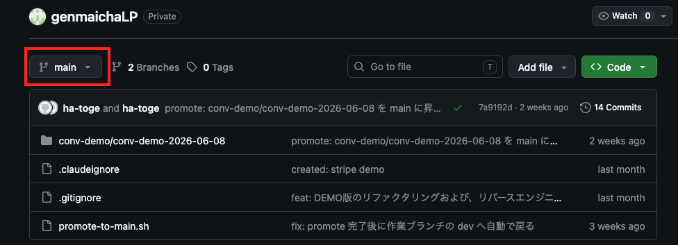
- https://sonarcloud.io で GitHub SSO ログイン
- 右上の ＋ → Analyze new project
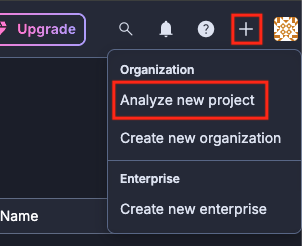
- 対象の GitHub プロジェクトを指定（初回は SonarCloud にリポジトリへのアクセス許可を求められる）。
- ここで GitHub App（SonarQubeCloud）のアクセス範囲を聞かれたら、
All repositoriesではなくOnly select repositoriesを選び、点検したいリポジトリだけ許可する（下のハマりどころ参照）
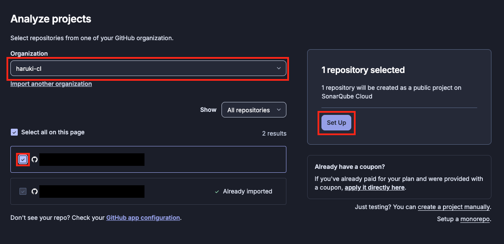
- ここで GitHub App（SonarQubeCloud）のアクセス範囲を聞かれたら、
- （上記で
Only select repositoriesに設定済みであることを確認してから）解析方式は 「Automatic Analysis」 を選ぶと設定が楽（以後 push のたびに自動解析） - 解析完了を待ち、出た指摘を AI と一緒にレビュー（意味・直し方を AI に説明させる）
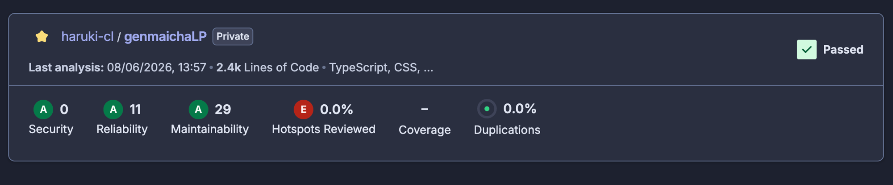
- 点検対象を
⚠️ ハマりどころ
- SonarCloud の指摘には誤検知（false positive）もある。鵜呑みにせず AI と判断する
- 解析単位を分けたいので、専用リポジトリを対象にするのが推奨（Git ブランチ参照）
- 意図しないリポジトリまで勝手に解析されることがある。原因は2つの組み合わせ:
- SonarQubeCloud の GitHub App を
All repositories（全リポジトリ）で許可している - SonarCloud の Organization で新規リポジトリの自動取り込み（Automatic Analysis / auto-provisioning）が有効
- GitHub → Settings → Integrations → Applications → SonarQubeCloud → Configure（https://github.com/settings/installations）で
Only select repositoriesに変更して対象を絞る - 個別プロジェクトだけ止めたいなら、SonarCloud の対象プロジェクト → Administration → Analysis Method の「Automatic Analysis」を OFF、または Administration → Deletion で削除
- SonarQubeCloud の GitHub App を
✅ 完了の定義
見つけた問題を 1つ以上修正できれば完了。
ラップアップ・発表会（Day 3 の最後 30 分）
最終発表会（1人3分）
Day 3 の最後の 30 分を発表会にあてる。1人3分で手短に。
- 自分の公開 URL のデモ
- Day 3 で追加した機能の紹介
- 「AI への頼み方で一番効いた工夫」を1つ共有
振り返り
- 3日間で体験した開発サイクル: デザイン生成 → 実装 → テスト → 公開 → 機能拡張 → 点検
- AI 開発で効いたコツの総まとめ
- 1発で完璧を狙わず、会話で直す
- やりたいこと・受け入れ条件を先に .md 化してから渡す（細かい設計やテスト観点の洗い出しは AI に任せる）
- 秘密情報は AI に渡さない
- テストがあるから大胆に拡張できる
- 持ち帰り: 自分の URL で公開された自分の SaaS 🍵
- 質疑応答・アンケート（詳細は当日案内）
3Days ワークショップフロー — AI とつくる「自分の SaaS の MVP」